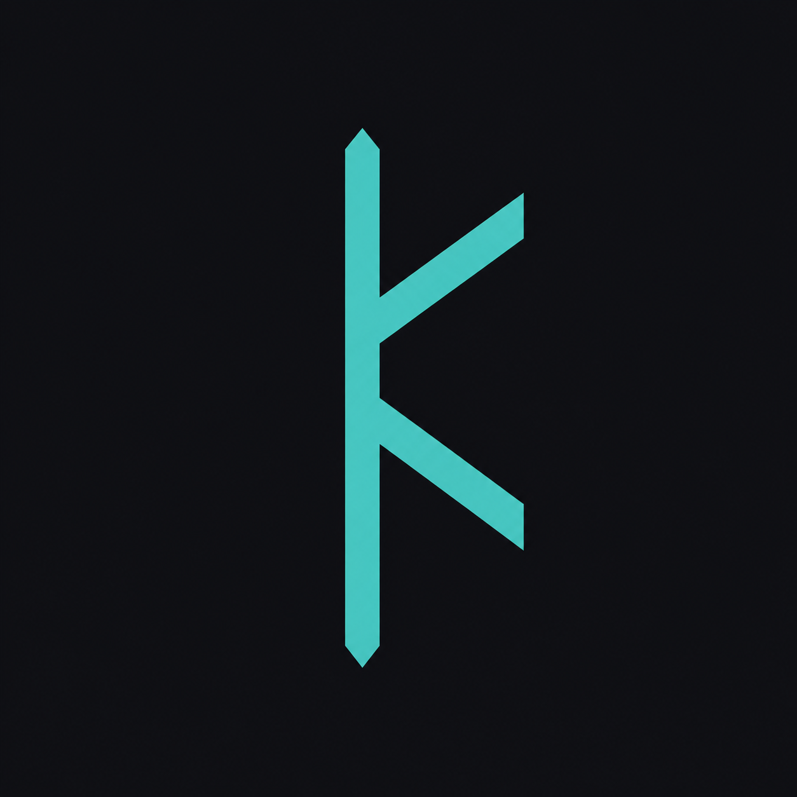
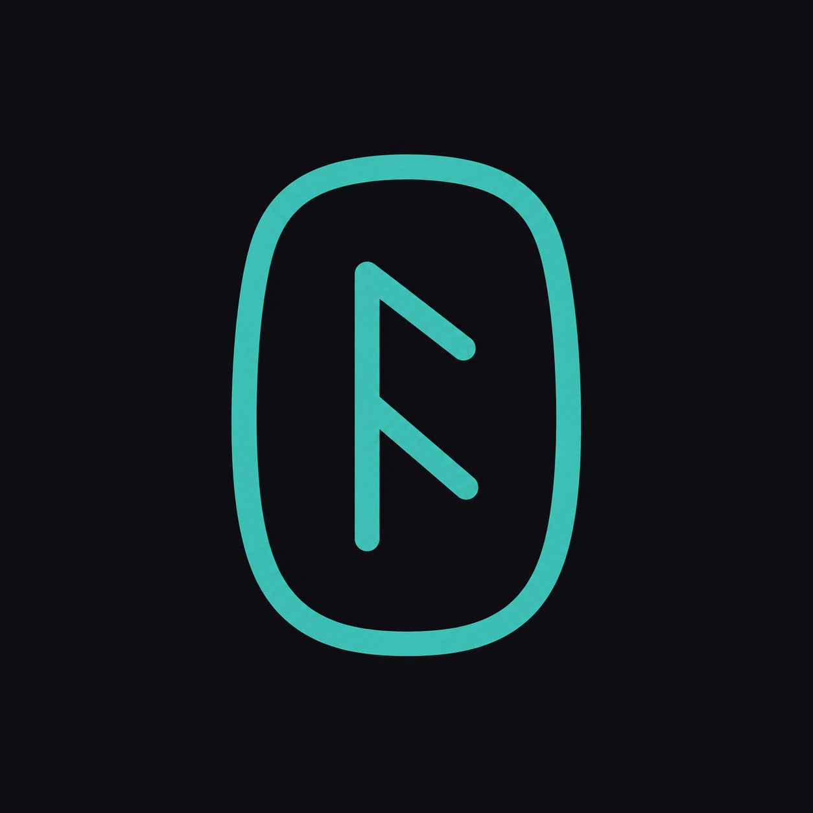
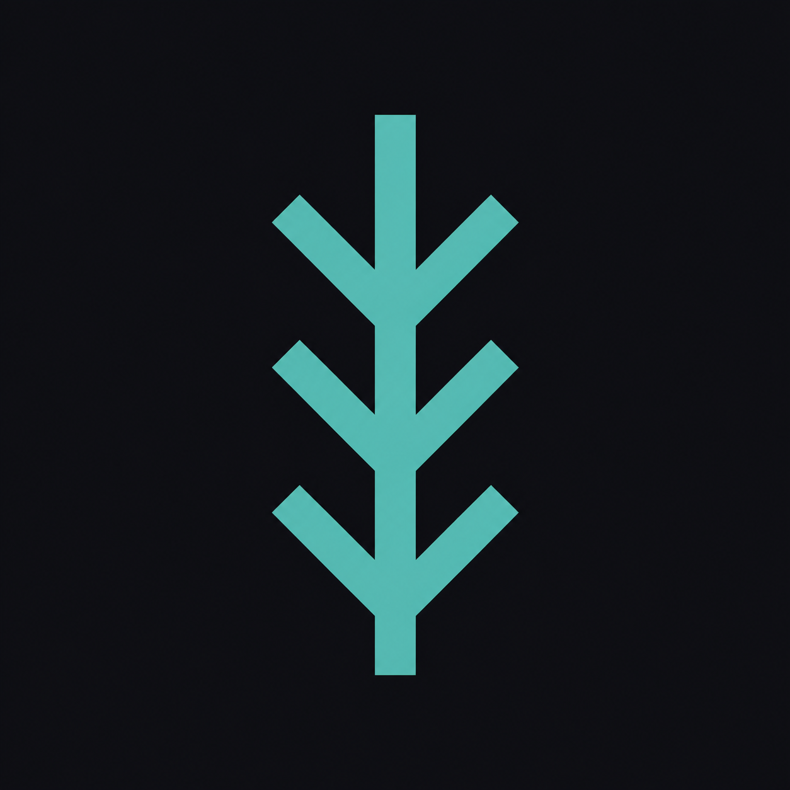

runa-glifo-angular
glifo rúnico de 3 traços

runa-pedra
pedra rúnica com marca gravada

runa-bindrune
bind rune, haste com braços simétricos

navi-crt
monitor CRT com ponto teal aceso

navi-rede
nó de rede com linhas radiais

navi-cursor
chevron de prompt com underscore